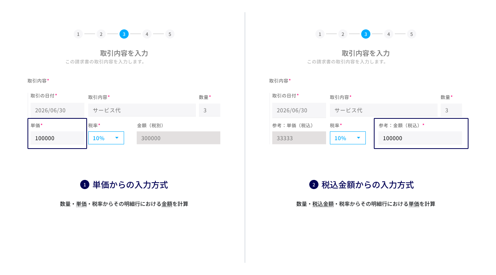

倒算（按含税金额输入）
在账单功能中，可按未税单价输入明细，也可从含税金额倒算来创建账单。使用倒算时，输入含税金额后，系统会反算出单价和消费税额。
这种方式从最终应付的含税金额开始创建账单，因此可以将买家应付的含税金额设为 1,000 日元或 10,000 日元之类的整数金额。 由未税单价计算时，含税总额可能出现零头。倒算可以避免这种情况。
可在 fincode 控制面板或通过 API 使用倒算。创建账单的基本步骤请参阅使用账单功能。
倒算单价和消费税额时，舍去不足 1 日元的部分。
同一张账单中无法混用按含税金额输入（倒算）和按未税单价输入。请为每张账单选用其中一种方式。
在控制面板操作
在控制面板的账单创建或编辑页面，每条明细都有“单价（未税）”和“金额（含税）”两个输入框。

填写其中一项后，输入方式即确定，另一项无法填写。清空已填写的输入框后，两种方式可重新选择。输入单价（未税）时，系统按未税单价创建账单。输入金额（含税）时，系统通过倒算创建账单。
通过 API 指定
通过 API 创建账单时，可在创建账单（POST /v1/invoices）或更新账单（PUT /v1/invoices/{id}）中通过入力方式（input_type）指定输入方式。
input_type未指定null）时，按未税单价创建账单。input_type将amount设为该值时，按含税金额倒算并创建账单。
各参数的详情请参阅以下 API 参考。